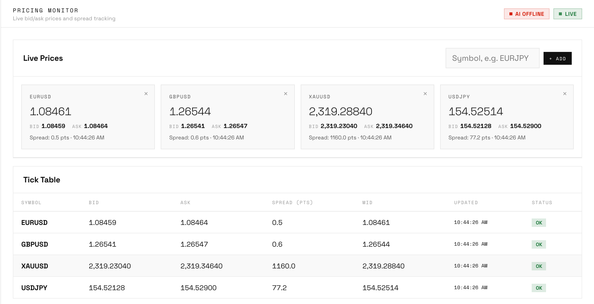
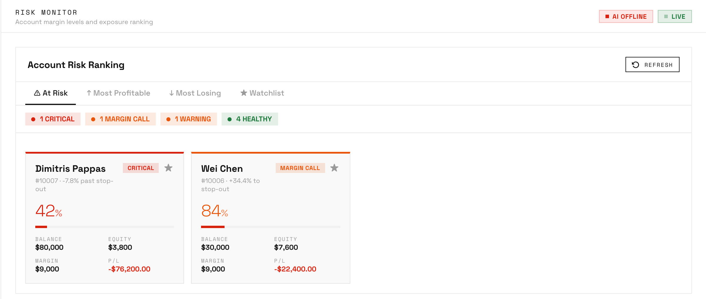
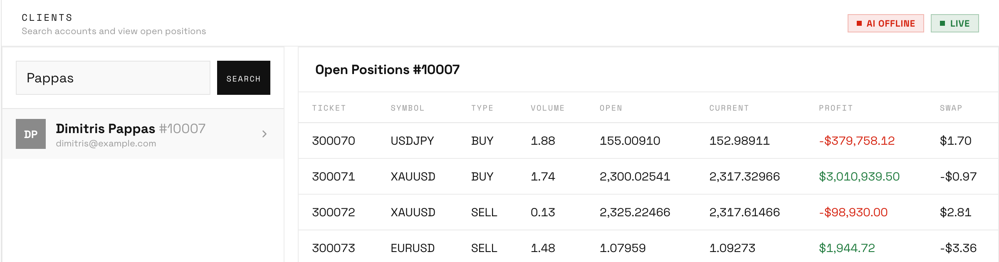
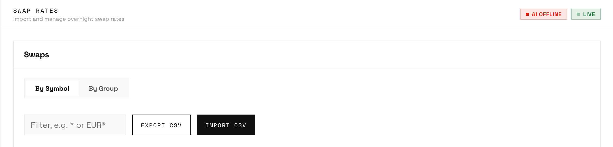
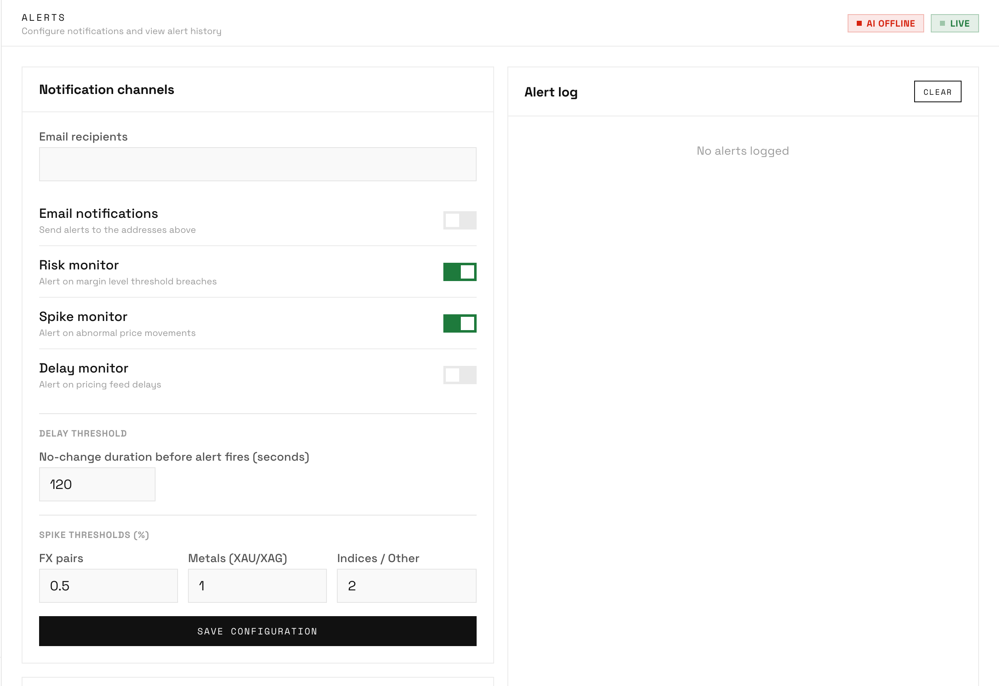
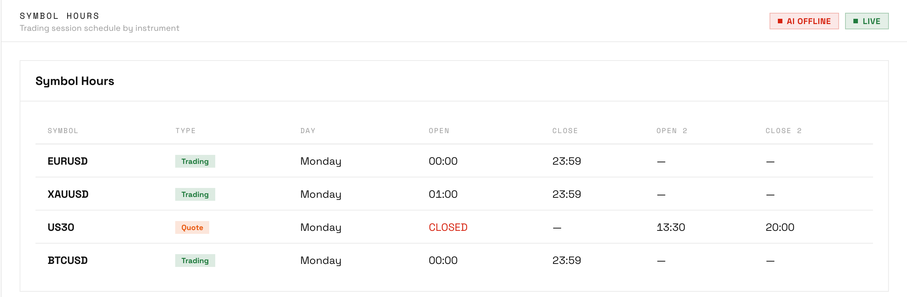
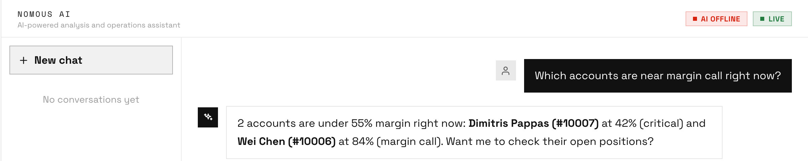

Platform Features
Seven powerful modules, one unified platform. Built specifically for MT5 broker operations teams who need real data in real time.
See live bid/ask prices and spreads for every symbol on your MT5 server, updated in real time via WebSocket. No more manually checking MT5 Manager to verify prices.
Filter by symbol group, sort by spread width, and instantly spot anything that looks off before your clients do.

Monitor every connected account in real time. Equity, margin level, floating P&L and open positions, all visible at a glance without opening MT5 Manager.
Color-coded status badges flag accounts that are approaching margin call so your team can act before a stop-out happens.

Find any client instantly by MT5 login number, email address, or name. View their account balance, open positions, trade history, and group settings, all without logging into MT5 Manager.
Your support and compliance teams get exactly the information they need, with no unnecessary access to the full Manager terminal.

View current swap rates across all groups and symbols on your server. Before changing anything, use the simulator to model the effect of new swap values, so there are no surprises for your clients.

Configure alerts for any event that matters: margin calls, spread spikes, MT5 server disconnects, large trades. Notifications go out instantly to your team's email and Telegram.

Manage trading session hours and market holiday schedules for every symbol group on your server. See at a glance which markets are open right now and which are scheduled to close.

Ask your platform anything in plain English about spreads, account risk, client positions, swap rates, or upcoming holidays, and get an instant answer grounded in your broker's own real-time data.
Every broker's AI only ever sees that broker's own data. Nothing is shared, mixed, or visible across accounts, and every conversation is saved so your team can pick up where it left off.

Register your brokerage and connect your MT5 server. Your team can be live within the hour.